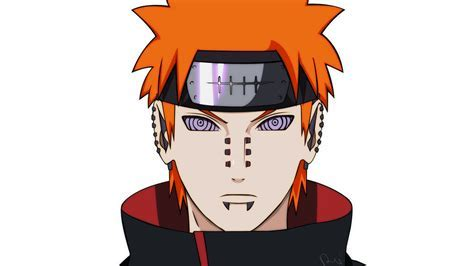

|  | AboutName : Nagato Eyes : Rinnegan |
Pain was the head of the Akatsuki, a criminal organisation that sought the power of the tailed beasts. He is responsible for a lot of things, including the murder of his own and Naruto’s mentor, Jiraiya, the destruction of the leaf village and murdering members of the leaf village in exchange for information of Naruto’s whereabouts.
He is responsible for a lot of things, including the murder of his own and Naruto’s mentor, Jiraiya, the destruction of the leaf village and murdering members of the leaf village in exchange for information of Naruto’s whereabouts.
Nagato created the Six Paths of Pain after he was left crippled during a battle with Hanzō. Unable to move or act on his own, he controlled six corpses to carry out his will as part of his "Pain" identity. In the anime, the first body used, belonged to his childhood friend Yahiko, which was his favourite. To match his late friend's hair colour, he had the other Paths' hair dyed to the same colour, including eyebrows. Unbeknownst to Nagato, his first Six Paths of Pain were actually composed of individuals that Jiraiya had met when they were alive. Nagato implants their black receivers all over their bodies as body piercings.
Each of the Six Paths of Pain can be used to perform any technique that Nagato himself is capable of, however, he limits each body to one branch of the Six Paths Techniques, the exception being Yahiko's body (the Deva Path) through which he performs a number of miscellaneous jutsu; the King of Helland the creatures summoned by the Animal Path are part of his shared vision. Nagato refers to each body by the Path it embodies and has them serve specific purposes, be it offensive or defensive, reconnaissance or repair. Each of the Paths has its own importance in a fight – the Naraka Path's ability to restore all the other Paths making it the most valuable – and therefore, Nagato will sacrifice other Paths to protect those further up the hierarchy.